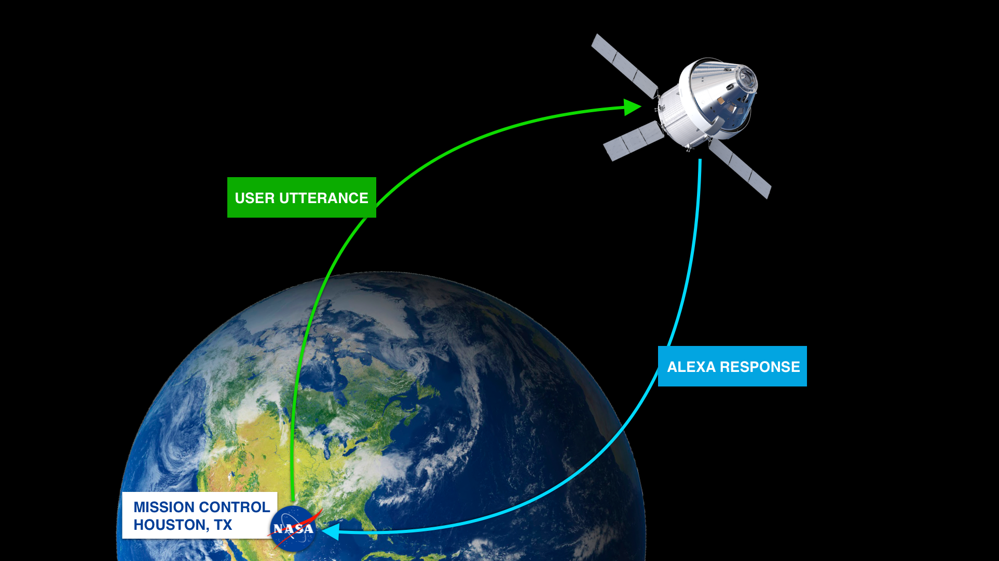
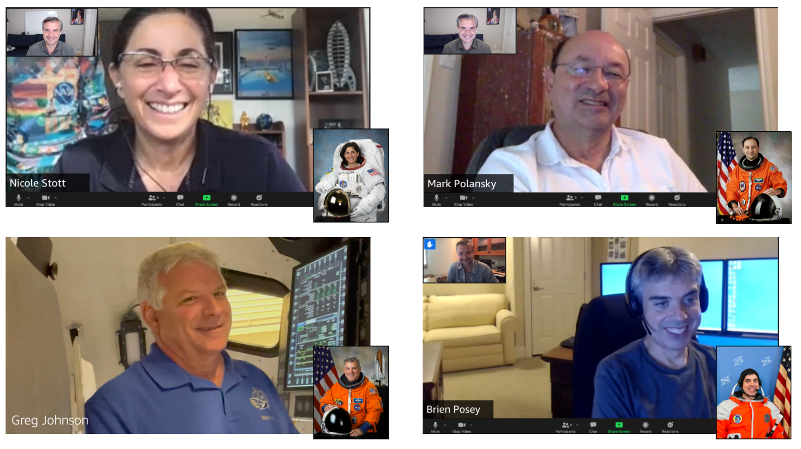
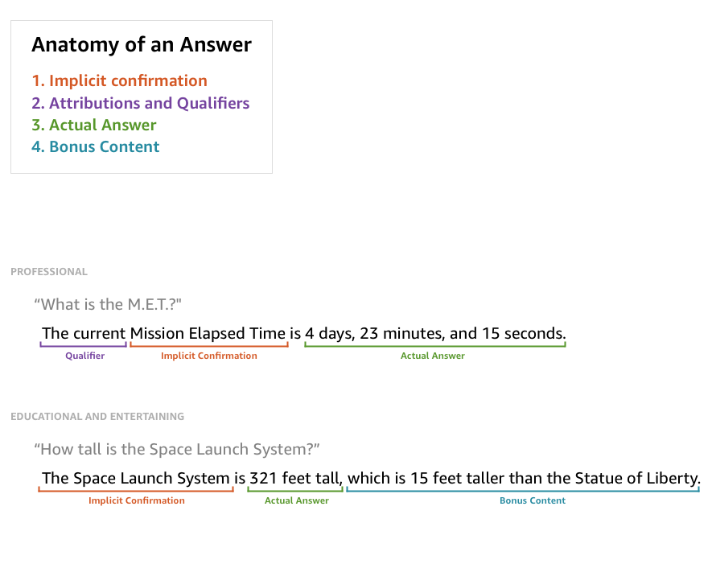
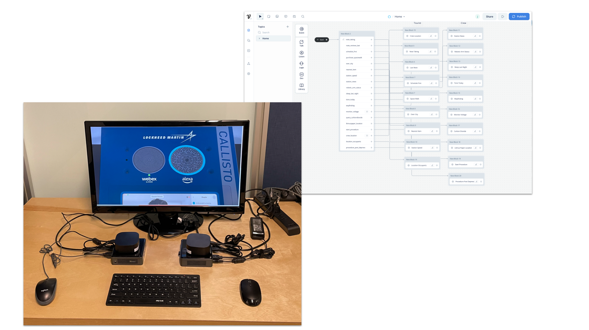
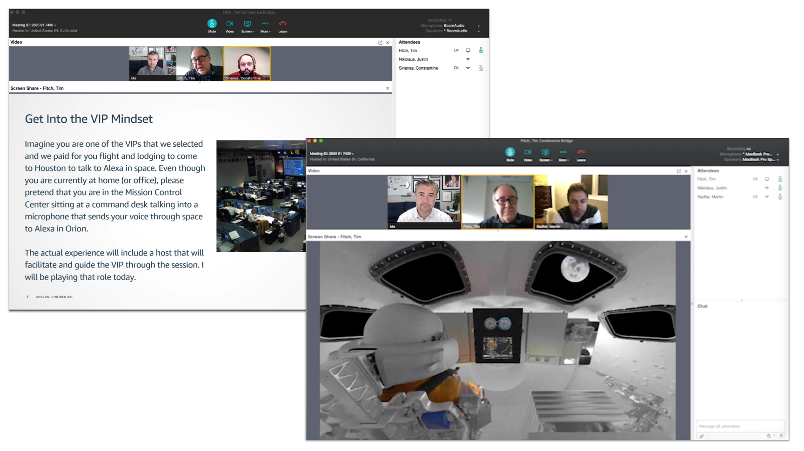
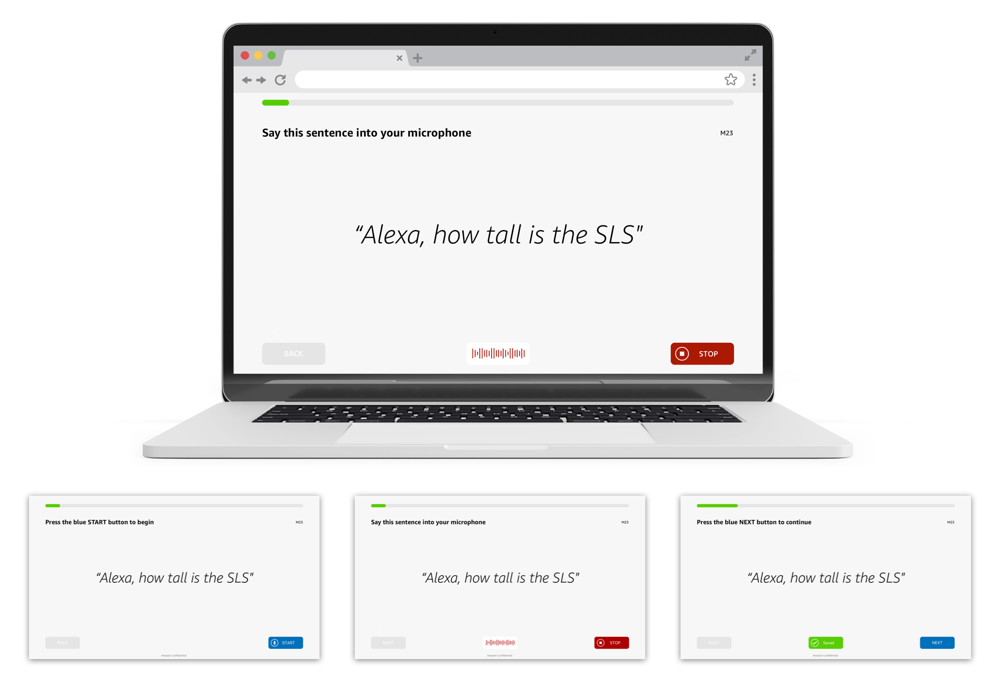
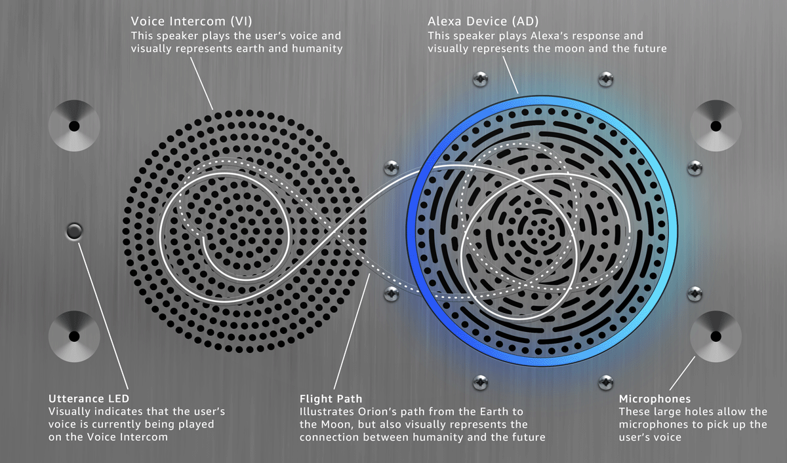
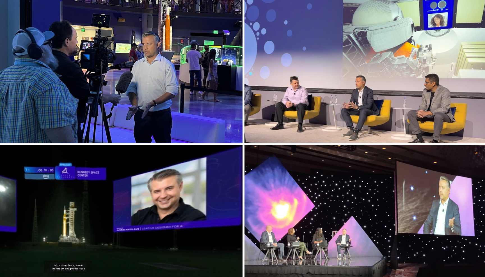
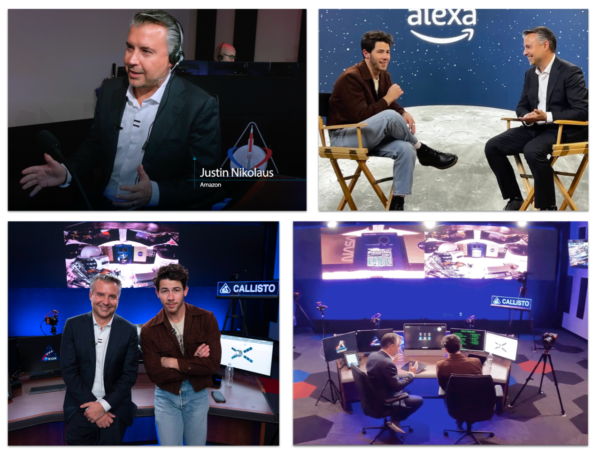
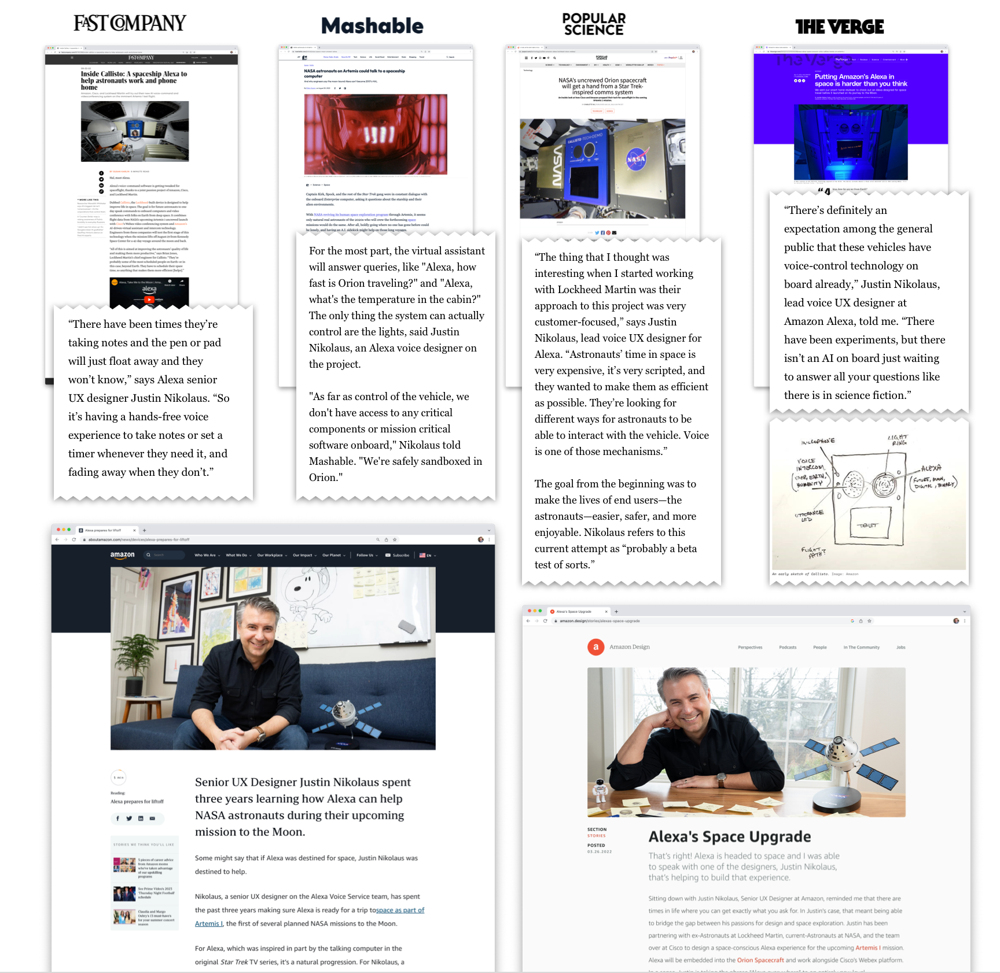

Overview
I worked with Lockheed Martin and NASA to design a voice experience to showcase how voice interactions can help future astronauts. The goal was to gain industry acceptance of voice interfaces on crewed missions and increase Alexa brand perception. This work flew as a secondary payload on board Orion and was tested throughout the Artemis 1 mission around the moon. Due to limited resources and my drive to raise the bar, I took on many roles across the project: design project lead, prototyper, hardware collaborator, user researcher, and on-camera host.

Research
I conducted astronaut interviews to uncover real friction points and use cases for voice interfaces in space. Greg “Box” Johnson, pilot for Space Shuttle missions STS-125 & STS-400, was especially excited about this new method of interacting with the vehicle. I also ran workshops with NASA flight controllers and directors to identify critical use cases, layering those insights on top of extensive desk research into spaceflight operations.

Design
A key insight from research was that for Alexa to earn a place on the mission manifest, it needed to go beyond home use cases like music and news. Users needed access to real information from the spacecraft. I designed an answer framework with four components: Implicit Confirmation, Attribution and Qualifiers, Answer, and Bonus Content. For professional users I prioritized brevity; for civilians I included Bonus Content to surprise and delight.

Prototype & Testing
I prototyped the voice experience in VoiceFlow and deployed it to a small Intel NUC with microphone and speaker running a custom build of the Alexa Voice Service. For testing, I set up two rooms, one simulating the spacecraft and another representing Mission Control, with an artificial communications delay to mimic the Deep Space Network.

When the pandemic hit, I invented a remote testing method: the latest software build ran in Sunnyvale operated by my engineering lead, I conducted sessions from Seattle, and users joined from around the world via video conferencing with choreographed engineering support. This approach gave us continuous feedback throughout the project.

Model Testing
Due to the unique hardware, QA had difficulty testing all voice experiences in a timely manner. I conceptualized and designed a web app to collect voice data for automated testing. Working with one engineer, we built it in two weeks. The tool allowed the team to gather voice recordings from people across the world to improve performance, and is now available for anyone at Amazon to use.

Hardware Design
I conceptualized and delivered the industrial design of the top plate of the payload (speaker grills). I'd be happy to walk through my process and how I created a hidden easter egg. It took a lot of math and deep collaboration with the Lockheed Martin fabrication team to pull it off.

Launch & Mission
My extensive knowledge of both the experience and technical aspects led leadership to recommend I represent Amazon for press and media events. I spoke about the importance of user-centered design at a space conference, presented the potential of voice interfaces to Fortune 500 C-suite attendees, and gave a live interview during the rocket launch countdown.

Once the mission was underway, I shifted to on-camera host, leading special guests through the experience at Mission Control in Houston. At every point along the 26-day mission, Alexa performed beautifully, delighting celebrities, thousands of STEM students, government officials, NASA flight directors, and former astronauts.

Impact
The project drove 95% positive to neutral PR with 78 dedicated stories. I talked to journalists at Fast Company, Popular Science, Mashable, and the Verge to increase awareness of the project with the general public. Additionally, I was featured in two different employee spotlight articles on Amazon News and Amazon Design.
My work generated 2M dialogs in the public Alexa skill and an overall halo effect of 1M dialogs on Knowledge domain utterances related to moon and space, 18% over our goal. The success of the project opened the door to working on future space integrations with Lockheed Martin and other space partners.
